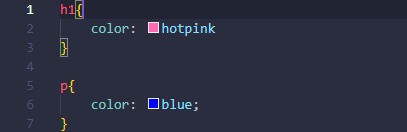
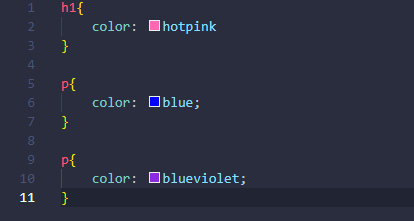
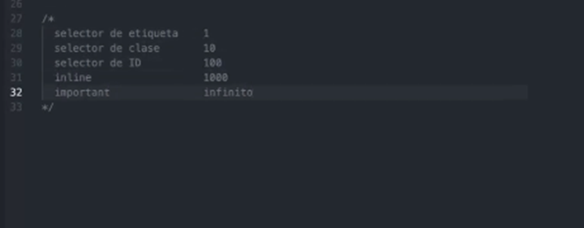

Conocer estos conceptos te hará dominar CSS
Los selectores se utilizan para delimitar los elementos HTML de nuestra página web a los que queremos aplicar estilo.
Es el proceso por el cual algunas propiedades CSS aplicadas a una etiqueta se pasan a las etiquetas anidadas.
Los estilos que vienen en último lugar, sobreescribe a lo anterior.
Cuando hay conflictos de estilos el navegador aplica sólo el de mayor especificidad.
